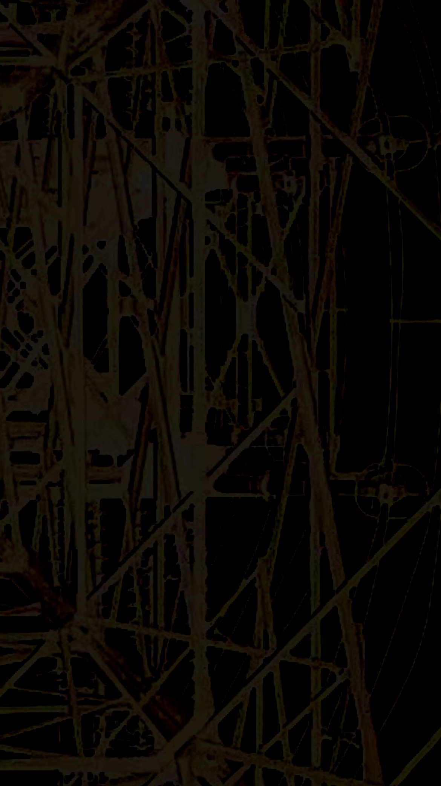

0-1 Never said it would be like this right 0 「人類史のなかで、なにかがひどくまちがっていたとしたら──そして現在の世界の状況を考えるならば、そうでないとみなすのはむずかしいのだが──、おそらくそのまちがいは、人びとが異なる諸形態の社会のありようを想像したり実現したりする自由を失いはじめたときからはじまったのではないか」 1 FLY 山の上で、星がきらめく広々とした星空の下、ユダがイエスに口づけをしたとき、彼は自らの光を捨てた 闇の中へ。友情は、往々にしてそうやって始まるものだ。 2 あの時、 あなたは私を憐れだと感じた 私が「客であり続ける」ことを選んだから。 3 「武装に足る言葉などないのだ」 4 しかしながら、われわれを 抑圧している者に、基礎となる ルールを作らせてはならない。 彼らのゲームに近寄るな、 彼らのルールでゲームをするな、 これは新しいゲームであり、われわれは新しいゲームを創ったんだということを 彼らに知らせるのだ。 そして、このルールは何かが 動いていくことを意味している。 何かが変わっていくことを。 5 ＊私がつね日ごろ考えている〈深い生活〉というはっきりしないパターンは、実は、私自身の暗い消極的な生活態度の一種の弁護であり、現実の矛盾と問題に対して消極的に求めるまずしい期待にすぎない。このような不愉快な暗さは有害なものであり、誠実に生きて行こうとする意志を蝕むものである。〈暗さ〉と〈誠実さ〉とをすぐに結びつけようとすることの中に、私自身の救いがたい偏見と安易さがあるといわなければならない。(3.14) 6 Asylum 逃避こそが彼の避難所であり、現実逃避が彼の王国である． 7 ある時は豊かであり、ある時は貧しく、物質的な複雑さをすり抜けていく。常にどこか別の場所にいるか、逃避を求めているため、逃避こそが彼の避難所であり、現実逃避が彼の王国である。 8 そして代償を支払うのは他人に任せてしまう。 9 秘密主義で、少し謎めいており、彼が何を考えているのか、何を望んでいるのか、決してはっきりとはわからない。[...]彼は少しユートピア的であり、その日その日を生きている。彼は日常において妥協することを好まず、常に奇跡的な解決策を待ち望んでいる。決断を下さなければならない状況は、彼の士気をくじいてしまう。 10 そしてほとんどいつも、自身の信条を捨て降伏することを選択してしまう。 11 孤独を感じることを嫌がり、本能的に集団との一体感を渇望している。周囲の影響を受けつつも、非現実の世界――音楽、詩、ファンタジー――へと逃避する。状況や受ける影響次第で、彼は「最も高潔な人間」にもなれば「最も放蕩な人間」にもなり得るし、「最も肉欲的な人間」にもなれば「最も神秘的な人間」にもなり得る。その官能的な陶酔感は、人格の他の側面がどのような色合いを帯びているかによって、変容し、精神的な高みへと達することもある。 12 ＊私たちが、この世の出来事に深くつまずくなら、それは私たちの深い関心のしるしであり、この世に対する責任の証しである。(5.20) 13 しかし実際は、責任を負うことから逃れ続けているだけ… 14 SARIN Malicious self absorbtion, mind of the madman The final solution: extinguish the sheep Self imposed sainthood, revolution dementia Brainwash the weak Their pathetic intensity channeled towards fanaticism Bleach the non-believer, killing of the innocents Gassed like insects, castration of the lunatic In religious wars everyones faith dies サリン 悪意ある自己吸収、狂人の心 最終的解決：羊を消す 自己に課せられた聖人化、革命 認知症 弱者を洗脳する 哀れな激しさは狂信へと向かう 信者でない者を漂白し、罪のない者を殺す 昆虫のようにガスを浴びせ、狂人を去勢する 宗教戦争では、すべての人の信仰が死ぬ 15 実際あらゆる系統的暴力の形式は、「政治的原理としての想像力の役割」への攻撃であり、系統的暴力を削除することを思考しはじめる唯一の途は、まさにこのことを理解することなのである。 16 「全体主義の政体になっていなくとも社会の統合は進んでいる。社会体制は反体制をも包みこんでその意識を一定の型にはめこむところまで来ている」 17 わたしたちは陰に陽に管理され平均化された社会に生きており、個人は自由であるかのような外観のもとで全体のなかに呑みこまれてしまっているのです。 18 「わたしたちの集合的想像力が崩壊してきていること。あたかも、近年の技術の進歩と高まる社会的複雑性が、わたしたちの政治的、社会的、経済的可能性を拡張するどころか、縮小させていると信じるよう、わたしたちがみちびかれているかのようなのだ。それらは人々の視野(ヴィジョン)を解き放つかわりに、いかなる種類の予見的政治(ヴィジョナリーポリティックス)をも不可能にしてきた。だから人類史の幅広い拡がりを取り込む試みこそが、人間が過去においてどれほど多くのやり方で政治的、経済的生活の構成を基礎づけてきたかを必ずやあきらかにし、そうすることでわたしたちの未来への視座の拡張のための一助となってくれるだろう」 19 「人間を、その発端から、想像力に富み、知的で、遊び心のある生き物として理解するに値すると考えてみたらどうだろう？人類が平等な牧歌的状態からいかにして転落したかを語るのではなく、なぜみずからを再創造する可能性を想像することさえできないほど、がんじがらめの思考の束縛に囚われてしまったのか？このように、問いを立ててみたらどうだろうか」 20 「現状の問題を分析して、自分の力で解決する能力がない人間を俺の基準で馬鹿という」 21 distract 決断と実行 生活と愛情 & dopeなcoflection 火の誕生 22 …軽蔑というのは必要な感情だと思うんです。自律を保つためには、心の防波堤のようなものが必要です。他者のゲームに簡単に乗ってしまうこと、自分のものではない物差しや色眼鏡を通して「そのような人間」だと見なされることに対する不満と諦め、「人間関係は良い誤解と悪い誤解で成り立っている」*けれども、時にわれわれは、自らの倫理や美徳などの価値観を積極的に守るために、自らと他の人々との間に一本の線を引く必要に迫られます。 というのも、いわゆる各人にかけがえのない「個性」のようなものを想定してみても、結局は自分や自分たちではない誰か他の人々を侵害することによって得られている自由に価値を認めてはならない。たとえばあなたがそう考えたとする。 ところで「精神を凌駕することができるのは習慣という怪物だけ」*なのだから、その自律的な思考は習慣の中で行われているべきだ。 ある種の物事について「考えている」と言うためには、頭で空想しているだけでなく、現実における行動が伴っていなければならないのだ。「理解するとは、それを受けて行動することである」*「行動が思想を決定する。逆は不可」*考えてみれば当たり前のことです…当たり前のことです当たり前の。 23 エルンスト・フックスという人物はきわめて奇抜な外見をしていたが、奇妙なことに、その絵画に画家個人の作風が現れることはほとんどない。彼の絵画はどれも完璧だが、それは冷たい、作者を示すことのない完璧さである。彼の絵画はあたかも作者不在のようだ。こうした作風における無名性は、おそらくエルンスト・フックスが身につけた正統的な絵画表現を考えることで明らかになる。彼にとっては個人を顕在化させるより、霊媒のように伝達することが重要なのだ。フックスがすることはただ、過去に描かれた伝統的な聖像画をできるかぎり忠実に写すことで、これにより原像が新たに見えてくるのだ。 24 A world is born Another dies 25 They stole, destroyed the neighbors land in the same sane/we should have empathy/but trapped in apathy/ Another oppressed/and I'm oppressed/not cause of war, their fear and pain/but own spectacle and cage 26 「…宣教をすることは私の仕事ではありません。芸術はそれでなくとも、はじめから教訓なのです。私の仕事は生きたイメージで語ることであり、議論することではありません。私は人生について解釈するのではなく、人生を人の面前に呈示しなければならないのです」 27 「行動が思想を決定する。逆は不可」 28 「ポーズは人格も作るからビッとしろ」 29 「…したがって私たちの作業は、こうした世界に向かって、ただひたすら、ゆさぶるという行為そのものをもって、対応するのです。すべての自己の能力を、ここに賭けること、それをすでに開始していることが、なによりも重要なのです。すでに体制を超えたところから、つまり超体制的次元をもって、体制に対応し、体制そのものの持っている知覚体験の質を、根底から変えること──このことが積極的に残された私たちの問題なのです」 30 達成された自由の意義とは何なのか。──もはや自分自身に対して恥じないことです。 31 人が最も厳しく報いを受けるものは何か。謙虚さだ。我々の最も個人的な欲求に応えなかったこと。他の人たちと見分けがつかなくなってしまったこと。自分を過小評価してしまったこと。我々自身の本能に耳を傾けなかったこと。こういった自己尊重の欠如が、あらゆる類の欠落、つまり健康・友情、安楽・矜持・陽気さ・自由・堅固さ，勇気における欠落によって報復を受けるのである。のちになると人は、このような真のエゴイズムの欠如を自分にけっして許さなくなる。この欠如のうちに真の自我の本性に対する反論、ためらいを見出すようになるのである。」(1888年の遺稿) 32 「……つくられたものが生命を持っているという感じは、美醜の判断の上に立つものであり、芸術的な事柄における唯一の基準である……」 33 「芸術は、つくることしかできない。説明はできない。美は、つくることしかできない。説明することはできません」 34 …忘れてはならないのは、国家は無条件にそこにあるのではない、ということです。国家が機能するのは、それが機能していると認識される限りにおいてです。つまり人々は、組織的に権力を無視するという点で、とてつもない力をもっています。(...)暴君が暴君となるのは、人々が暴君を暴君として扱い、彼を恐れるからだ、と。昨今の奇跡的な瞬間が私を魅了する理由は、ここにあります。指導者が名目上は権力を握っていたとしても、人々は突然、支配のゲームはすでに終わっていることを悟り、それを真剣に受け取らず、尊重もしなくなる。そのとき神秘的な断絶が起こるわけです。 これは本当に奇跡的な瞬間です。なぜか。現実には何も起こらないからです。権力者が権力の座から降りたわけではありません。この瞬間には、非常に神秘的な形で、みんなが、権力者さえもが、決着はすでについていることを知るのです。私はこれを暴力の象徴と呼ぼうとは思いません。しかし、私にとってこれは革命の本質です。 35 「資本主義には普遍的なものがひとつしかありません。市場です。普遍的な国家が存在しないのは、ほかならぬ普遍的な市場が存在するからで、普遍的な市場から見るといかなる国家も投資の拠点であり、証券取引所であるにすぎないのです。ところが市場とは、普遍化とも、均質化とも無縁で、富と貧困を生産するだけの恐るべきからくりにほかならない。人権をもちだしたところで、人権そのものがリベラルな資本主義に加担する積極的要因である以上、やはりどうしても資本主義の「楽しみ」を祝福するわけにはいきません。あらゆる民主主義国家は、人類の貧困を生産する作業に加担して、骨の髄まで腐っている。」 36 「ところで、われわれの気質とは、われわれの境遇や出来事の印象がその上に刻印されて来た、われわれの心情以外の何物でもない。実に多数の人間の魂を圧倒的に平凡なものにまで低下させ、より高き理念へと飛翔することをかくも困難にさせているものは、一体何であろうか？宿命的な頭蓋および脊椎構造、両親の身分や性質、境遇の平凡さ、周囲の卑俗さ、それどころか、故郷の単調ささえも、その原因である。われわれは深く影響を蒙ってしまっているのであって、われわれのうちには抵抗する力もなく、影響を蒙っていることを知ることさえないのである。外部のさまざまな印象を無意識的に受容することによって、自己の自立性を放棄してしまい、習慣の威力によって、魂の諸々の能力を押し潰してしまい、意志に反して混乱の種を魂の中に植えつけてしまったということは、実に苦々しい思いである」 37 「…人間が自分の状態を透視せず、自分を取り囲む軛の中で苦しげに痙攣することもなく、気狂いじみた嗜好で以て世界やそのメカニズムを混乱させようとしないなら、何と幸いなことであろうか！」 38 「一般に、われわれの中にそれに対応する琴線がないなら、或る音がわれわれの心を動かすことなどできるであろうか？あるいは別様の表現をするなら、われわれの脳髄がすでにそれを受容できる能力をもっていないなら、われわれは何らかの印象を脳髄の中に受容することなどできるであろうか？」 39 「宇宙が縮小する。それは、ほんの一ブロックほどの長さになり、星もなく樹木もなく河もない。ここに住む人々は死んだ。彼らは、他の人々が彼らの夢のなかで腰をおろすための椅子になる。街のまんなかに車輪が一つある。その車輪の轂に首吊り台がとりつけてある。すでに死んだ人々は死物ぐるいでその首吊り台にのぼろうとしている。しかし車輪の回転があまりに速いので……」 40 けれども、それが死んだ労働に変えていく生きた肉体は私たちのものであり、それが生み出すゾンビは、私たち自身なのだ。 41 「彼らは、親にも、友達にも、自分のネガティブな感情を出すことが苦手です。恐れているんだと思います。嫌われて、関係が壊れてしまうことを。そうやって言葉を使わずにいると、何が起こるか。肉体と同じで、使わない能力は、どんどん衰えていきます。でもネガティブは自分の中に溜まっていく。内向を続けて、学校や、会社に行けなくなる。やがて必ず、心と体の健康を害します」 42 「科学技術の進歩というのは、病的犯罪者の手の中にある斧のようなものだ」 (Technological progress is like an axe in the hands of a pathological criminal.) 43 固有の痛みを持った人間、その眼の前に立つこと、彼らの評定に晒されること、彼らの人生の歩みによって裏づけされた信念に裁かれることを恐れた。 根拠のない生を送ってきたという後ろめたさ、つまりは、 44 「偽りの身であるのかもしれないという飢餓」 45 Success is counted sweetest By those who ne’er succeed. To comprehend a nectar Requires sorest need. Not one of all the purple Host Who took the Flag today Can tell the definition So clear of Victory As he defeated — dying — On whose forbidden ear The distant strains of triumph Burst — agonized — and Clear! 46 ぼくにはわかる すべての人々が幸せを求めているということ。 ぼくにはわかる 僕が人間であるということ。 ここに住んでいれば、 わかりきったことも予期できなかったことも、 すべて待ちもしないでどんどん過ぎてゆく。 不幸な出来事までが すべて恐ろしいスピードで去っていく。 あとにはみじめな人間がのこり、 悲しみをかみしめることしかできない。 ぼくにはわからない なぜ幸せがこないのか。 どうしてもわからない。 なぜ人間でなくちゃならないのか。 ただみんな見えるものを追って、 ひとりひとりがトンネルの中でさがしている 歩いても歩いても道に迷うだけで、 一瞬の眠りの夢をみいだしても それは手の上の砂のように落ちてく。 誰にもわからない、 決してわからない。 どうして幸せがこないのか。 誰が責任を負うべきなのか。 47 超弩級の軍艦が溺死者の額にふれて砕け散らない限り、正義について語っても無駄である。 Gegenlicht Man redet umsonst von Gerechtigkeit, solange das größte der Schlachtschiffe nicht an der Stirn eines Ertrunkenen zerschellt ist. 48 男の思いは果てしなく、愛は中から柩を破れるほどだった。――女が柩に置いた花一輪、それほど重くなかったなら。 49 「実体化した虚像に押し潰される/いつまでも続かないとは分かっていた」 50 「後ろめたく歌を歌い正当化スルナ!」 51 MUST NOT KILL EVE. 52 退屈に穴を開け息を継ぐ 突き返す暴力 取り戻すのは自分のやり方 取り戻すのは自分の価値 53 あなたの本当の望みを打ち明けてしまいましょう,それは誰からも干渉されない場所で気の済むまで眠り続けること． 54 I do remember one thing/ It took hours and hours and/ By the time I was done with it/ I was so involved, I didn't know what to think/ I carried it around with me for days and days/ Playing little games/ Like, not looking at it for a whole day/ And then, looking at it/ To see if I still liked it/ I did 55 Ah! Sol e chuva, na sua estrada Mas não importa, não faz mal Você ainda pensa e é melhor do que nada Tudo que você consegue ser, ou nada ああ！太陽と雨、あなたの道の上で でも構わない、大丈夫 あなたはまだ考えている、それだけでも何もないよりましだ あなたがなれるすべて、あるいは何もない 56 WE LOVE LIVING BUT WE'RE LIVING TO DIE DYING TO LIVE WANTING MORE THAN BEING 17 CAN GIVE US. FORCED TO GROW UP TOO QUICKLY OUR MINDS ARE FAR MORE AGED THAN OUR TIRED BODIES. SITTING IN OUR BEDROOMS WASTING AWAY OUR YOUTH WE SHOULD PROBABLY GET A LIFE OR AT LEAST ENJOY THE ONES WE HAVE. BUT I GUESS THAT'S PART OF BEING A TEENAGER- BOREDOM, FRUSTRATION, HOPE, AND HOPELESSNESS CO-EXISTING WITHIN THE SAME MOMENT. THEY SAY THAT LOVE AND HATE ARE THE TWO STRONGEST EMOT IONS (who is they any ways). BUT IT'S SO MUCH EASIER TO HATE YOU THAN LOVE YOU. I MEAN I DON'T WANNA BE A CLICHE OF ANY SORT BUT I'D RATHER SMASH YOU IN THE FACE THAN TALK TO YOU ABOUT THE WEATHER OR ANYTHING ELSE OF NO PARTICULAR MEANING TO ME, CAUSE IT'S ALWAYS STORMING IN MY BEDROOM AND FORECASTS CALL FOR MORE BAD WEATHER THROUGHOUT THE YEAR. ON THE BRINK OF TURNING 18 I WONDER IF ALL I HAVE TO OFFER THE WORLD IS HATE AND NEGATIVITY IN THE FORM OF ROCK N ROLL OR IF EVERYTHING WILL JUST MAGICALLY CHANGE WITH THE YEARS. I DON'T KNOW BUT FOR YOU ALL YOU REATARDS FANS LETS HOPE NOT. ROCK AND ROLL IS MY SALVATION IT'LL SET ME FREE WHATEVER THAT MEANS. KEEP ON ROCKING TO THE BEAT OF A BROKEN DRUM JAY REATARD MARCH 31 1998 生きることは好きだが、死ぬために生きている。 生きるために死に、17歳で得られる以上のものを求める。 早く大人になることを余儀なくされた私たちの心は、疲れた体よりもずっと老いている。 寝室に閉じこもって青春を浪費しているのなら、そろそろ人生を手に入れるか、少なくとも今ある人生を楽しむべきだ。 しかし、それが10代であることの一部なのだろう。退屈、フラストレーション、希望、絶望が同じ瞬間に共存している。 愛と憎しみは2つの最も強い感情イオンであると言われている（彼らは誰なのだろう）。 でも、あなたを愛するより、あなたを憎む方がずっと簡単だ。 つまり、陳腐な言葉を使いたくはないけれど、天気のこととか、僕にとって特に意味のないことを話すくらいなら、君の顔を叩き潰したいんだ。 歳を目前にして、私が世界に提供できるのはロックンロールという形の憎しみと否定だけなのだろうか、それとも年月とともにすべてが魔法のように変わっていくのだろうか、と考えている。 わからないけど、あなたたちREATARDSファンのために、そうでないことを祈りたい。 ロックンロールは私の救いであり、私を自由にしてくれる。 壊れたドラムのビートに合わせてロックし続けよう。 ジェイ・レイタード 1998年3月31日 57 You're not part of anyone's life. Follow your own rules. 58 Escape from your own prison cell. 59 Non aspettare la tua fine Solo tu puoi cambiarе E decidere cosa fare Di te e della tua vita! Mai arrendersi, mai finire Mai arrendersi, mai subire Mai! Mai! Mai! Mai! 自分の終わりを待つな 変われるのは自分だけ そして、どうするか決めるのは 自分と自分の人生を 決してあきらめない、決して終わらない 決してあきらめない、決して苦しまない 決して 決して 決して 決して 60 Hours don't remove the strain of what you leave behind; The strain of holding onto what you've got Echoes call you from your past (They're coming back to find you, they're coming back to find you...) 61 This one...alone...moving 62 This desert rose has deadly thorns The blossoming nation built upon conquest and creed Four million Palestinians scattered in its wake An encamped nation of refugees just learning how to hate Down amongst the olive groves there is no promised land Zion bends to the wargod's will and blood still stains the sand 63 自分を抑え込んで一匹の犬となった時/目に見えない鎖に繋がれる/I hate myself 64 「人から見られる自分/自分が思っている自分/その違いに葛藤が深まる/時だけが早く感じ/焦りに追い詰められて行き/無気力な自分/抵抗力を失い堕落していく/抜け出せぬカルマが俺を追い詰める/立って動いて叫んでみよ/言われなくても分かっている/流され潰され崩れて行く/何をすべきかわからない」 65 “It's not a substitute for you/But it will do/It's not a substitute for you/Missing you” 66 “It's so easy when your friends are dead/It's so much easier when you don't even care/All these faces mean nothing to me” 67 Don't it feel like you're to blame? After everything you hoped to claim is raining down on you Still you'll never be the same And could we know that loneliness and solitude don't have to be the same...thing Withont knowing where we are? Where where where we really are 68 この世界のどこか寂しいところで、お互いに隣り合って腰かけている二人の男を想い浮べていただきたい。彼らは互いに話しもせず、相手を見もせず、一度もふり向くことすらしない。彼らは親しい間柄でもなく、相手の経歴など全然知っていない。彼らはこの日の朝早く、旅行の途中で知り合ったにすぎない。今、彼らは相手のことなど考えていない。われわれもまた彼らがどんなことを考えているかを知る必要もない。一方の男も他方の男も同じベンチに腰をおろしているが、一方の男はその持前の気分からして明らかに平静で、何が起ろうとゆったりとすべてを迎え容れる気持が見られる。彼は何かをしようとしている構えはほとんどないが、しかしまさにそこに現実にいなければならぬものとしてそこにいるといった様子である。他方の男は、その様子からでは、どのような人間か分らないが、無口で抑制力のつよい人間である。しかしこの男をよく知っているひとならば、幼児性の閉塞の呪縛が彼にあること、彼の抑制の様子は、彼の態度とはまったく別のものであることが分る。彼のすべての態度の背後には、貫徹できぬ自己伝達不可能というものがある。ところでわれわれの心を締めつけている七つの鉄の輪を破ってしまうような瞬間の一つがあることを思い浮べてみよう、突如この男の呪縛がとけてしまう。しかしこの男は一言も話しかけるわけでもなく、指一つ動かすわけでもない。にもかかわらず、彼は何ごとかをなす。彼の行為によらずに、呪縛の解消が起った。それがどこから生起したかは問わない。とにかく突如として起った。しかし彼は今や彼自身だけが支配する力をもっている一つの隔意を自ら止めてしまうのである。すると彼から隔意なく伝達が流れ出、沈黙がこの伝達を隣りにいる男にもたらすのである。この伝達はこの男に向けられたのであり、すべて真の運命の出合いにたいしてこの男がいつもするように、この伝達を隔意なく受け取るのである。彼は自分が経験したことをたれにも語ることはできない。いや自分自身にさえできない。このとき相手の男について彼は何を知るであろうか。知ることはここでは必要ではない。なぜならば、人間と人間の間で隔意なきものが支配しているところには、たとえ言葉はなくとも、対話的な言葉が秘蹟的に生ずるのである。 69 理解するとはそれを受けて行動することである． 70 逸脱しよう そう言って消えた 終わりのない奴隷の列 71 「マルクスとイエス・キリストはある根本的な認識でひとつなんだよ。カネはほかのすべての価値を濾してとり除いてしまう、という認識だ」 72 「二時半と、二時三十五分過ぎの思想や信念や、生き方や、エネルギーの量に微妙な変化が見られる人間であって、初めて生きていると言えるのだ。それ以外は、間違いなく死んでいる」 73 「根元的な現実へのわれわれの嗜欲をとり戻す──もしそういうことが可能だとすれば──そういう力のある小説がここにある。基調をなすものは苛烈さであって、苛烈さは、たしかにたっぷりとある。しかもここには強烈な狂躁もあるし、狂気じみた陽気さもある、激情もあるし、興奮もある。ときとしては、ほとんど錯乱に類したものさえある。金属をなめたときの後に残る徹底的な空虚の味のごとき赤裸々な緊張をもって極端と極端とのあいだを不断にゆれ動く振幅がある。それはオプティミズムをもペシミズムをも超えている。作者は最後の戦慄をわれわれにあたえたのだ。苦悩は、もはや秘密の安息をうしなったのである。 自己省察に麻痺し、織巧な精神的食餌によって梗塞されてしまった世界における肉体の根元のこのような荒々しい暴露は、血液の流れに精気をあたえるものとなる。この激烈さ、淫猥さは、あらゆる生殖の行為にともなう神秘や痛苦の表出のごとく夾雑物をとどめない。生気を回復する経験の価値、叡智と創造との第一の本源が、ふたたびここに主張されている。ここには完結されなかった思想と行動との厖大な領域が残されている。批判的すぎる連中がうっかりするとからみつかれてしまいそうなもつれた糸が束になったまま残されている。かつてゲエテは『ウィルヘルム・マイスター』について、つぎのように言っている。「多くの人々は一つの中心点を求める。これは困難でもあるし、正しいことですらない。わたしは、われわれの間近かにおかれた豊饒な複雑な一つの人生は、それだけで格別はっきりした傾向がなくても十分だと考えたい。このような人生は、結局、知者にのみもたらされるのだ」この作品は、さまざまな出来事の純粋な流離変転によって作品そのものの枢軸の上に固定されている。中心点がないから、まさにそれゆえに、ここには意志の問題がなく、したがってヒロイズムとか闘いとかの問題もなく、流れるがままの服従があるだけだ。 これらの荒っぽい競画は、従来の小説の精細な人物画よりも、おそらくいっそう溌剌としており、「生きて」いるであろう──現代の個人は中心を持たず、「全体」の幻想をいささかもつくりださないという理由によって。これらの人はみな、われわれを溺らせつつある虚偽の文化的真空に統合されており、かくして生みだされたものは、それに面を向けるためには絶体絶命の勇気を必要とするところの混沌たる幻覚である。 原始人のような正直さで示されているこれらの屈辱感、敗北感は、挫折、絶望、あるいは不毛にではなく、渇望に──より生命的なものを求める貪欲な餓鬼のごとき渇望に終る。詩は、技巧の被膜をむしりとることによって、「芸術以前の水準」と称せられそうなところまで降下することによって、発見される。崩壊の諸現象のうちにかくされている形式の耐久的な骨格は、絶えず変化する強烈な感情の肉にふたたび変形せられるべきものとして再現する。創痕──文化の産科医によって残された創痕は焼き消される。開いた創口を茫然と眺めることにより、ゆがんだ象徴主義的技巧への便乗によって人類が避けようとつとめてきたところの厳酷な心理的現実を追跡することにより、芸術的幻想の可能性を再建する芸術家がここにいる。ここでは象徴は素裸にされ、このあまりにも洗練された文化人によって根強い野蛮人も同様の素朴さをもって羞恥もなく提出される。 この野蛮な抒情(リリシズム)をもりあげているものは、断じて誤れる原始主義ではない。それは回顧的傾向ではなくて、未開の領域への前進的跳躍である。[......] もしこの書のうちに、生気をうしなった人々のまどろみを醒ます震駭な打撃力が示されているとするならば、われわれは、われわれみずからを祝福しようではないか。なぜなら、われわれの世界の悲劇とは、まさしくこの世界の惰眠を呼びさますことのできる何ものももはや存在しないことにあるからだ。そこには、もはや激越な夢想がない。精神をさわやかにするものがない。眼ざめがない。自意識によって生じた麻酔のなかで、人生は、芸術は、われわれの手からすり抜けて、いまや姿をかくそうとしている。われわれは時とともに漂い虚影を相手に闘っているのである。われわれには輸血が必要なのだ。 そして、この書でわれわれにあたえられるものこそは血であり、肉である。飲み、食い、笑い、欲情し、情熱し、好奇する、それらは、われわれの最高の、もっとも隠微なる創造の根をつちかう単純な真実である。上部構造は切りとられている。この書がもたらすものは、われわれの時代の不毛な土壌のなかで根が枯れうせたうつろな枯木を吹き倒す一陣の風だ。この書は、その根元にまでわけ入り、その根を掘り起し、その下に湧き出る泉を呼びあげるのである」 74 「百年間ないしそれ以上のあいだ、世界は──われわれの世界は、死にかかっていた。そして、この最近百年内外のあいだ、天地の尻の穴に爆弾をしかけて、それを粉みじんにするほどの気ちがいは一人としていなかった。世界は腐りつつある。ばらばらに死にかけている。だが、この世界には、とどめの一撃が必要なのだ。木っ端みじんに吹きとばすことが必要なのだ。ぼくたちのうちの誰ひとり完全なものはいない。しかし、それでもぼくたちは、ぼくたちの内部に、諸大陸と、諸大陸のあいだの海と、空の鳥とをもっている。ぼくたちは、それを書こうとしているのだ──すでに死んではいるが、まだ埋葬はされていないところの、この世界の進化を。ぼくたちは時間の表面を泳いでいる。ほかの連中は、みな溺れてしまったか、溺れつつあるか、あるいはこれから溺れるだろう。この本は厖大なものになるだろう。そこには数個の大洋のような空間があるだろう、そのなかで動きまわり、遊泳し、歌い、踊り、這いのぼり、浴みし、トンボ返りをし、泣きわめき、凌辱し、殺人するところの空間が。一つの大伽藍、正真正銘の大伽藍、その建設には、おのれの正体を見うしなったすべての人間が協力するだろう。そこでは死者のためのミサが行われるだろう。祈禱が、懺悔が、識美歌が、お悔みとおしゃべりが、一種の殺人的な無関心が、そこにはあるだろう。 薔薇の窓と怪物の形をした樋嘴と、侍僧と棺衣保持者とが、そこにはあるだろう。渡廊で馬を駆足で走らせることもできるし、壁に頭をぶつけることもできる──それでも壁はへこまないだろう。好きな国語でお祈りしてもいいし、外でからだをまるめて眠っても一向にさしつかえない。この寺院は、すくなくとも一千年はもつだろう。そして再建はできないだろう。なぜなら建築家は死にたえ、建築方式も死んでしまうだろうからだ。ぼくたちは絵葉書をつくらせ、観光団を組織するだろう。伽藍のまわりに町をつくり、自由な自治体をつくりあげるだろう。天才は必要でない──天才はもう死んでいる。ぼくたちには強い働き手が必要なのだ。幽霊などとは縁を切って進んで肉の衣を着ようという人間が必要なのだ……。」 75 脂ぎった導火線/火がつく湾岸/代理戦争/衝撃映像/広告付き言動/炎上/アンチコメント/どっち向いてんだ/ 無自覚なプロパガンダ/わかんないフリした客寄せパンダ/略奪虐殺拡散希望 一万発の核弾頭/もうたくさんだ/ 誰もが願ってるでもなくならない/恐怖で夜も眠れない子供/定規で引いたまっすぐな国境/迷路のように入り組んだ状況/占領地囲む鉄条網 蓋をしてフィルターかける情報/フェイクがファクトをファックするポルノ/ヘイトで正義を競り落とすオークション/ テロとジェノサイド アパルトヘイト/偏見に満ちたノンフィクション/アテンション 洗脳からのアセンション/ Against the world舐めんない一加減 76 最初に彼らが外国人を攻撃したとき、自分は少し不安になりました。 けれども自分は外国人ではなかったので何もしませんでした。 そして彼らは障がい者を攻撃しました。自分の不安はさらに膨らみました。 けれども自分は障がい者ではなかったのでやはり何もしませんでした。 それからアイヌに、琉球民族に、レズビアンに次々と攻撃の手が加わり、 そのたびに自分の不安は増したが、それでも何も行いませんでした。 ついに彼らは音楽家を攻撃しました。 そうして自分は音楽に生かされている人間でした。 そこで自分は何事かをしました。 しかし、そのときにはすでにそれは遅すぎたのです。 77 「われわれにとっての三つの大きな地層を考えてみよう。つまりわれわれはこの三つによって最も直接に拘束されるのだ。それは有機体、意味性、主体化である。有機体の表面、意味性と解釈の視角、主体化または服従の点。きみは組織され、有機体となり、自分の体を分節しなくてはならない──さもなければ、きみは一個の倒錯者にすぎない。きみは意味するもの(シニフィアン)であり、意味されるもの(シニフィエ)、解釈者であり、解釈されるものでなければならない。──さもなければ、きみは変質者にすぎない。きみは主体であり、主体として固定され、言表の主語の上に折り畳まれる言表行為の主体でなければならない。──さもなければきみは一人の浮浪者でしかない」 78 どうしようもなく信用されなくなった背中洗い落とす涙流す仲間/でも大丈夫、才能や運がなくたって最後まで自分とみんな信じているから 79 いい音楽や美術をつくるためには気が触れちまった方が早いと思った 80 俺みたいのってきっと死の淵に立ってやっと感じんだろ/そんな思考持つ器に俺は受肉した 81 あの移民の友達は生活の手段を選べない/彫刻を彫る設備と場所が俺にはある/あのダンサーの子には絵を描くアトリエがない/この星で人一人に可能性の違いを作ったのは一体誰なんだい？ 82 アフォリズムとは定義の詩的な形式である． 83 リリシズムは大切にした人が最後に放つ別れの言葉のみで成立する 84 なんで空は青いのなんで雲は白いの なんで眠たくなるのなんでお腹が減るの なんで嬉しくなるのなんで悲しくなるの なんでみんな笑ってのにあの子は泣いてるの なんで雨が降るのなんで風が吹くの なんで星は光るのなんで月は沈むの なんでこんな苦しいのなんでそんな優しいの なんでここにいるのなんでなんでって思うの それはね 世界が君を愛して そして君が世界を愛してるからさ 正解はないんだけど どんな絵を描いたっていいんだ 手に入る鍵は無数にあっても 開けることのできるドアはいつも一つだけ 一人でいってもいいし誰かと一緒でもいい 生きる事は選ぶ事だから迷うことは当たり前のこと 不思議の中で君は君なりの居場所 きっと見つけられる たった一歩踏み出せば全てが変わっているはずさ 始まりなんて走り出した後の話 誰一人 何一つ 同じままではいられない ずっと続いてほしい一瞬 矛盾した感情に寄り添うほど より一層君が必要になるんだ だから会いに来たよ見つけた宝物を持って あの原っぱの真っ只中で何かがわかったんだ またいつの間にか いくつかのヒントとたくさんの？が 答えをくれる代わりに君に応えてくれる 85 再利用スタイルを進化させられない奴らのおかげで文化が退化 86 奇妙なことに私はいつもこんな考えに心が支配されている。すなわち、私の身の上話は私個人の話であるだけでなく、私のように生きる多くの人たち(彼らはまた私を鍛え上げ、そのことを語りもする)の利益のためにもなっているという考えである。私は一個の集団なのであり、この集団に向けて深刻かつ家族的な激励を語りかけている。いつも、そんなふうに私には思えるのである 87 「お前の良心は何と言っているのか？──「お前自身になれ」と。 88 「自分の目で自分らしく物を見る目ができれば、それは一つの創作である」 89 「私は、たんに、慰めや娯楽のためだけに音楽をしているわけではなく、音楽という表現形式を通して、今日私たちが当面している問題を考えようと思っている。もちろん、音楽は、政治のようには、物事を変革したりすることはできない。だが、その無力さを認識することで、何ものによっても変えられない、感情の元素の基底にまで降り立ちたいと思う。」 90 ＊ほんとうの悲しみは、それが悲しみであるにもかかわらず、僕らにひとつの力を与える。僕らがひとつの意志をもって、ひとつの悲しみをはげしく悲しむとき、悲しみは僕に不思議なよろこびを与える。人生とはそうでなくてはならないものだ。 91 ＊今ここで、私がはっきりと考えてみなければならないことは、自分が聖書から「何を」期待しているかということだ。聖書につきつけて行かなければならない自分の問題を自分のなかにたしかめてみなければならない、ということなのだ。そういう問題があるところに、はじめて聖書との格闘があるのだ。ヤコブと天使との組打ちは、キリスト者の生活を示すひとつのパターンである。(1957.3.13) 92 10:34「わたしが来たのは地上に平和をもたらすためだ、 と思ってはならない。平和ではなく、剣をもたらすために来たのだ。35わたしは敵対させる ために来たからである。人をその父に、／娘を母に、／嫁をしゅうとめに。36こうして、 自分の家族の者が敵となる。37わたしよりも父や母を愛する者は、わたしにふさわしくない。 わたしよりも息子や娘を愛する者も、わたしにふさわしくない。38また、 自分の十字架を担ってわたしに従わない者は、わたしにふさわしくない。 39自分の命を得ようとする者は、それを失い、わたしのために命を失う者は、 かえってそれを得るのである。」 93 「しかし、人間が個人になるのはまさしく、真実にたいする確信と他者たちの全員一致の同意を失うことによってであります」 94 「現代の愚行とは無知ではなく、紋切り型の考えの無-思考を意味しているのだ」 95 「ヒューマニズムて、人救けのふりして実は自分のすきなようにあしらうことちゃうんか」 96 「人間というものは、自分自身の価値について、外にあらわれたしるしを、つねに自分のために必要とする。」 97 悔し涙で自分を溶かして 人生はなにかなと 贅沢なこと考えてるのは誰だ 98 魂よ わが食道はおまえのように私を苦しめはしなかった 私の言うことに黙ってしたがってきた おまえのようなやり方で私をあざむきはしなかった 卑怯とも違うがおまえは言うこととすることとが違うのだ それを指摘するとおまえは肉体と違って魂は 言うことがすなわち行為なのであって 矛盾は元来ないのだとうまいことを言う そう言うおまえは食道がガンになっても ガンからも元来まぬかれている 魂とは全く結構な身分だ 食道は私を忠実に養ってくれたが おまえは口先で生命を云々するだけだった 魂よ おまえの言葉より食道のほうが私には貴重なのだ くちさきばかりの魂をひとつひっとらえて 行為だけの世界に連れてきたい そして魂をガンにして苦しめてやりたい そのとき口の達者な魂ははたしてなんと言うだろう 99 みちは かきねに そっていく。 おほりや はたけにも そっていく。 さかなら たらたら おりていく。 おかなら うねうね のぼっていく。 森や林は ぬけていく。 小川やみぞは またいでく。 子どもが なわとび していても。 牛が ながなが ねていても。 いたちが ついと よぎっても。 かすみが とおくを かくしても。 みちは けっして とまらない。 みちは けっして まよわない。 そして どこかへ いっちまう。 どこかへ みちは いっちまう。 100 臆病は残酷性の母である。 101 もしきみがものにおびえているなら、この本を読みたまえ。だがその前に聞きたまえ。もし笑いだせば、おびえている証拠である。書物は、きみの目に、生命のない品物に見えるだろう。無理もない。だが、もし、まんいち、字が読めねば？恐れる必要があろうか……？きみは孤独か？寒気を覚えているか？きみは心得ているか？人間はどれほどまでに《きみ自身》であるか？ 愚かで？そして 裸であるか？ 102 「大作家や、大芸術家が病人だという意味ではありませんよ［...］彼らは病人であるどころか、逆に医師であり、しかも医師としてのあり方がかなり特殊なのです［...］ニーチェがいうように、芸術家や哲学者は文明の病を見極める医師なのです［...］ 単に診断をくだすだけではありません。記号はさまざまな生の様態、さまざまな生存の可能性をあらわすことで、ほとばしる生の、あるいは涸れた生の症候となるのです。ところが芸術家は、涸れた生に甘んじることも、個人の生活で満足することもできない。自分の内面、自分の記憶、自分の病を語っても書くことにはならないからです。書くという行為には、生そのものを変容させ、個人を越えた何かにつくりかえよう、生が閉じ込められていたら、そこから生を解き放ってやろうという明確な意図がある。［...］書くということは、来るべきものとして想定され、まだ自分の言語をもたない人民のためにおこなわれる行為です。創造とは、いわゆる伝達ではなく、耐久力をもち、抵抗することです。記号、〈事件〉、生、そして生気論は、深いところでつながっている。そしてこれらに共通するのが非ー有機的な生の力能であり、この力能は絵画の、文章の、あるいは音楽の線にも宿るのです」 103 ふるさとは遠きにありて想ふもの そしてかなしく歌ふもの かへるところにあるまじや 104 われわれは純粋性と暴力との間の選択をするのではなく種類の異った暴力の間で選択するのである……。重要な討議しなければならない問題は暴力ではなくてその方向と前途である。 105 鉄砲丸が遠くまでとぶのは方向が限られているからさ。 106 I'm toiling in the undergrowth Haunted by a friendly ghost Wishing to be free of what I feel 107 よきをひだにふくみのみ さまざまなる夜をはらめ、 死のこちらには死がひそみ 種のうちには絞られた精気、 濾過した夜に 血清があった 108 「いまぼくがひたすら望んでいることは──存在すること（to be）なのだ。どうか忘れないでほしいが、この不定詞は中国語では〈他動詞〉なんだよ」